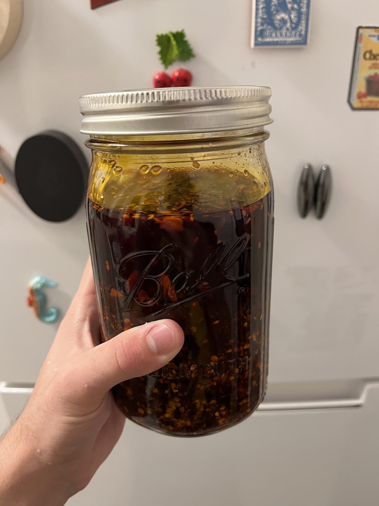

Chili Crisp
Home

Description
While many good chili crisp recipes exist, this recipe is my favorite iteration so far. It's crafted to maximize flavor while still allowing the end result to be useful in a large variety of settings. For this reason, I don't include peanuts, which I find limits the use cases for this condiment. In minimalist fashion, the main flavor kickers are the chili flakes and the fried onion and garlic. The rest of the ingredients simply support these ingredients and balance the overall flavor.
Ingredients
Servings: 4 cups
- 3 cups avocado oil
- 1 1/2 cups spicy red chili flakes
- 1/2 large red onion
- 12 cloves garlic
- 1/2 tbsp salt
- 1/2 tbsp sugar
- 1 tbsp white sesame seeds
- 1 tsp msg
- 2 tbsp light soy sauce
optional:
Steps
- Thinly slice onion from root to stem and then once to halve those slices
- Thinly slice garlic and any fresh chilis if using
- Starting them in the room temp oil, fry the fresh ingredients until they are light brown
- Strain fresh ingredients, saving the oil
- Put dry ingredients in a heatproof vessel
- Put oil back on heat until it reaches 350 F
- Pour oil over dry ingredients and mix
- Once a bit cooler, add back fresh ingredients
- Add soy sauce
Notes
- A high quality chili flake makes a huge difference on flavor
- Onions can be replaced with shallots if you prefer
- Try to keep the garlic and onion slices the same width since sufficiently uneven slices will cause some to burn in the frying step before others brown